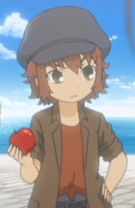
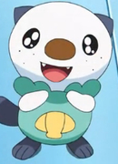

|  |
Carlo |
|
Carlo is an orphan that Lillia and Treize meet while in a town. |
 |
Elicia Hughes |
- Fullmetal Alchemst Botherhood
|
Elicia Hughes is the daughter of Maes and Gracia Hughes. She is an innocent, 3 year old girl. She loves her father and she is cute and talented. |
 |
Emolga |
|
Emolga is a Pokemon from the Unova region. Emolga lives in treetops and uses it glide from tree to tree. It can generate electricity in its cheeks. It capable to gather lots of food. Misato Fukuen voiced Elesa's Emolga. |
|  |
Oshawott |
- Pokemon Black and White
- Pokemon Movie 15: Kyurem vs. The Sword of Justice
- Pokemon Black and White: Rival Destinies
- Pokemon Black and White: Adventure in Unova
- Pokemon Black and White: Decolora Adventure
- Pokemon: Eevees and Friends
|
Oshawott is a Pokemon from the Unova region. Oshawott is a starter that trainer can choose from. Its shell is made from the same materialas its claw. Misato Fukuen voiced Ash's Oshawott. |